Common Problems
Yelp
Scaling Reads
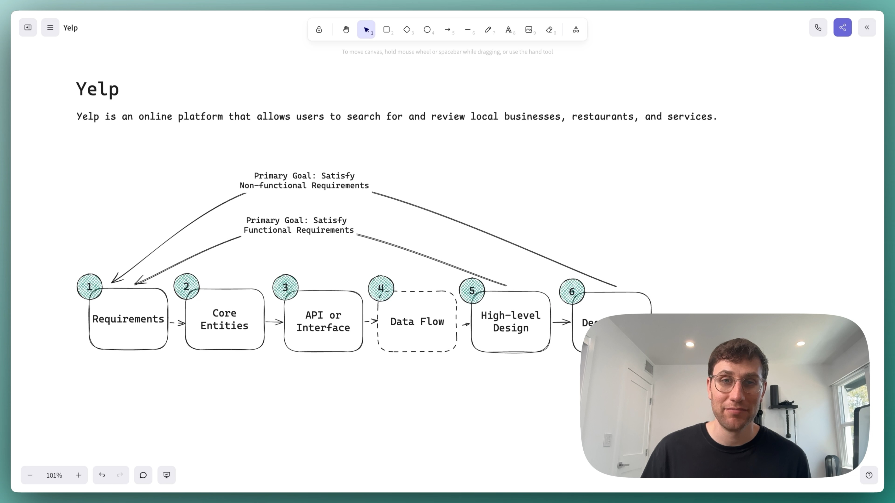
0:00
/
59:15
Understanding the Problem
🍽️ What is Yelp?
Yelp is an online platform that allows users to search for and review local businesses, restaurants, and services.
Functional Requirements
Some interviewers will start the interview by outlining the core functional requirements for you. Other times, you'll be tasked with coming up with them yourself. If you've used the product before, this should be relatively straight forward. However, if you haven't, it's a good idea to ask some questions of your interviewer to better understand the system.
Here is the set of functional requirements we'll focus on in this breakdown (this is also the set of requirements I lead candidates to when asking this question in an interview)
Core Requirements
- Users should be able to search for businesses by name, location (lat/long), and category
- Users should be able to view businesses (and their reviews)
- Users should be able to leave reviews on businesses (mandatory 1-5 star rating and optional text)
Below the line (out of scope):
- Admins should be able to add, update, and remove businesses (we will focus just on the user)
- Users should be able to view businesses on a map
- Users should be recommended businesses relevant to them

Non-Functional Requirements
Core Requirements
- The system should have low latency for search operations (< 500ms)
- The system should be highly available, eventual consistency is fine
- The system should be scalable to handle 100M daily users and 10M businesses
Below the line (out of scope):
- The system should protect user data and adhere to GDPR
- The system should be fault tolerant
- The system should protect against spam and abuse
If you're someone who often struggles to come up with your non-functional requirements, take a look at this list of common non-functional requirements that should be considered. Just remember, most systems are all these things (fault tolerant, scalable, etc) but your goal is to identify the unique characteristics that make this system challenging or unique.
Here is what you might write on the whiteboard:
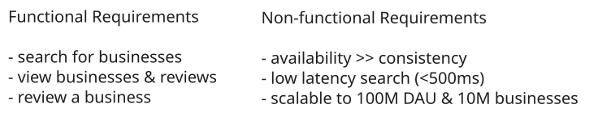
Yelp Non-Functional Requirements
Constraints
Depending on the interview, your interviewer may introduce a set of additional constraints. If you're a senior+ candidate, spend some time in the interview to identify these constraints and discuss them with your interviewer.
When I ask yelp, I'll introduce the constraint that each user can only leave one review per business.
The Set Up
Defining the Core Entities
We recommend that you start with a broad overview of the primary entities. At this stage, it is not necessary to know every specific column or detail. We will focus on the intricacies, such as columns and fields, later when we have a clearer grasp. Initially, establishing these key entities will guide our thought process and lay a solid foundation as we progress towards defining the API.
Just make sure that you let your interviewer know your plan so you're on the same page. I'll often explain that I'm going to start with just a simple list, but as we get to the high-level design, I'll document the data model more thoroughly.
To satisfy our key functional requirements, we'll need the following entities:
- Business: Represents a business or service listed on Yelp. Includes details like name, location, category, and average rating.
- User: Represents a Yelp user who can search for businesses and leave reviews.
- Review: Represents a review left by a user for a business, including rating and optional text.
In the actual interview, this can be as simple as a short list like this. Just make sure you talk through the entities with your interviewer to ensure you are on the same page.
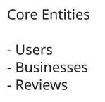
Yelp Entities
The API
The next step in the framework is to define the APIs of the system. This sets up a contract between the client and the server, and it's the first point of reference for the high-level design.
Your goal is to simply go one-by-one through the core requirements and define the APIs that are necessary to satisfy them. Usually, these map 1:1 to the functional requirements, but there are times when multiple endpoints are needed to satisfy an individual functional requirement.
To search for businesses, we'll need a GET endpoint that takes in a set of search parameters and returns a list of businesses.
// Search for businesses
GET /businesses?query&location&category&page -> Business[]Whenever you have an endpoint that can return a large set of results, you should consider adding pagination to it. This minimizes the payload size and makes the system more responsive.
To view a business and its reviews, we'll need a GET endpoint that takes in a business ID and returns the business details and its reviews.
// View business details and reviews
GET /businesses/:businessId -> Business & Review[]While this endpoint is enough, you could also split the business and reviews into two separate endpoints. This way we can have pagination on the reviews.
// View business details
GET /businesses/:businessId -> Business
// View reviews for a business
GET /businesses/:businessId/reviews?page= -> Review[]To leave a review, we'll need a POST endpoint that takes in the business ID, the user ID, the rating, and the optional text, and creates a review.
// Leave a review
POST /businesses/:businessId/reviews
{
rating: number,
text?: string
}High-Level Design
We'll start our design by going one-by-one through our functional requirements and designing a single system to satisfy them. Once we have this in place, we'll layer on depth via our deep dives.
1) Users should be able to search for businesses
The first thing users do when they visit a Yelp-like site is search for a business. Search includes any combination of name or term, location, and category like restaurants, bars, coffee shops, etc.
We already laid out our API above of GET /businesses?query&location&category&page, now we just need to draw out a basic architecture that can satisfy this incoming request.
To enable users to search for businesses, we'll start with a basic architecture:
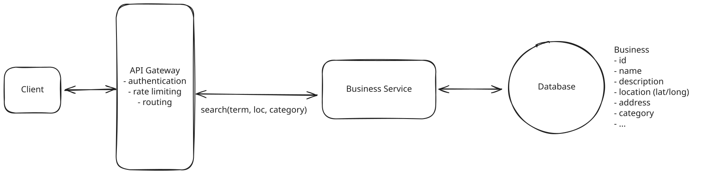
Yelp High-Level Design
- Client: Users interact with the system through a web or mobile application.
- API Gateway: Routes incoming requests to the appropriate services. In this case, the Business Service.
- Business Service: Handles incoming search requests by processing query parameters and formulating database queries to retrieve relevant business information.
- Database: Stores information about businesses such as name, description, location, category, etc.
When a user searches for a business:
- The client sends a GET request to /businesses with the search parameters as optional query params.
- The API Gateway routes this request to the Business Service.
- The Business Service queries the Database based on the search criteria.
- The results are returned to the client via the API Gateway.
2) Users should be able to view businesses
Once users have submitted their search, they'll be viewing a list of businesses via the search results page. The next user action is to click on a business to view it's details.
Once they do, the client will issue a GET /businesses/:businessId request to the API Gateway.
To handle this, we don't need to introduce any additional services. We can just have the API Gateway route the request to the Business Service. The Business Service will query the Database for the business details and then the reviews. For now, we'll keep reviews in the same database as the businesses, but we'll need to make sure to join the two tables.
Pattern: Scaling Reads
Given the massive read:write ratio, reading businesses is an perfect use case for the scaling reads pattern.
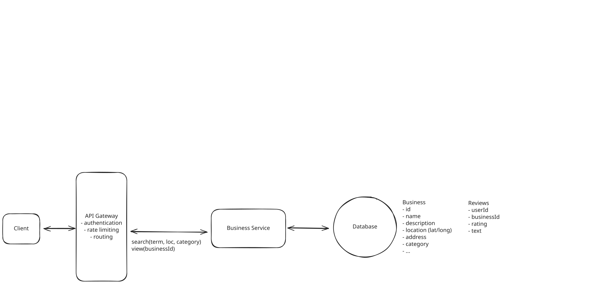
Yelp High-Level Design
A common question I receive is when to separate services. There is no hard and fast rule, but the main criteria I will use are (a) whether the functionality is closely related and (b) whether the services need to scale independently due to vastly different read/write patterns.
In this case, viewing a business and searching for a business are closely related, and the read patterns are similar (both read-heavy), so it makes sense to have this logic as part of the same service for now.
When a user views a business:
- The client sends a GET request to /businesses/:businessId.
- The API Gateway routes this to the Business Service.
- The Business Service retrieves business details and reviews from the Database.
- The combined information is returned to the client.
3) Users should be able to leave reviews on businesses
Lastly, given this is a review site, users will also want to leave reviews on businesses. This is just a mandatory 1-5 star rating and an optional text field. We won't worry about the constraints that a user can only leave one review per business yet, we'll handle that in our deep dives.
We'll need to introduce one new service, the Review Service. This will handle the creation and management of reviews. We separate this into a different service mainly because the usage pattern is significantly different. Users search/view for businesses a lot, but they hardly ever leave reviews. This insight actually becomes fairly crucial later on in the design, stay tuned.
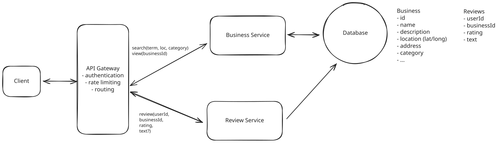
Yelp High-Level Design
When a user leaves a review:
- The client sends a POST request to /businesses/:businessId/reviews with the review data.
- The API Gateway routes this to the Review Service.
- The Review Service stores it in the Database.
- A confirmation is sent back to the client.
Should we separate the review data into its own database? Aren't all microservices supposed to have their own database?
The answer to this question is a resounding maybe. There are some microservice zealots who will argue this point incessantly, but the reality is that many systems, use the same database for multiple purposes and it's often times the simpler and, arguably, correct answer.
In this case, we have a very tiny amount of data, 10M businesses x 100 reviews each = 1TB. Modern databases can handle this easily in a single instance, so we don't even need to worry about sharding. Additionally, reviews and businesses are tightly coupled and we don't want to have to join across services to get the business details and reviews.
The counter argument is typically related to fault isolation and operational responsibility. We want to make sure that if the review database goes offline, we aren't left unable to search or view businesses. While this is a valid concern, we can mitigate it via other means like simple replication.
At the end of the day, it's a discussion of trade-offs with no single correct answer. I bias toward simplicity unless I can articulate a clear benefit to adding complexity and suggest you do the same if not already strongly principled on the matter.
Potential Deep Dives
At this point, we have a basic, functioning system that satisfies the functional requirements. However, there are a number of areas we could dive deeper into to improve the system's performance, scalability, and fault tolerance. Depending on your seniority, you'll be expected to drive the conversation toward these deeper topics of interest.
1) How would you efficiently calculate and update the average rating for businesses to ensure it's readily available in search results?
When users search for businesses, we don't show the full business details of course in the search results. Instead, we show partial data including things like the business name, location, and category. Importantly, we also want to show users the average rating of the business since this is often the first thing they look at when deciding on a business to visit.
Calculating the average rating on the fly for every search query would be terribly inefficient. Let's dive into a few approaches that can optimize this.
Approach
As alluded to, the simplest approach is to calculate the average rating on the fly. This is simple and requires no additional data or infrastructure.
We'd simply craft a query that joins the businesses and reviews and then calculates the average rating for each business.
SELECT
b.business_id,
b.name,
b.location,
b.category,
AVG(r.rating) AS average_rating
FROM businesses b
JOIN reviews r ON b.business_id = r.business_id
GROUP BY b.business_id;Challenges
While this approach is simple, it has significant scalability issues:
-
Performance degradation: As the number of reviews grows, this query becomes increasingly expensive. The JOIN operation between businesses and reviews tables can be particularly costly, especially for popular businesses with thousands or millions of reviews.
-
Unnecessary recalculation: The average rating is recalculated for every search query, even if no new reviews have been added since the last calculation. This is computationally wasteful.
-
Impact on read operations: Constantly running this heavy query for every search can significantly slow down other read operations on the database, affecting overall system performance.
Given our scale of 100M daily users and 10M businesses, this naive approach would likely lead to unacceptable performance and user experience issues.
Approach
Alternatively, we could pre-compute the average rating for each business and store it in the database. This pre-computation can be done using a cron job that runs periodically (e.g., once a day, once an hour, etc). The cron job would query the reviews table, calculate the average rating for each business, and update a new average_rating column in the businesses table.
Now, anytime we search or query a business, we can simply read the average_rating from the database.
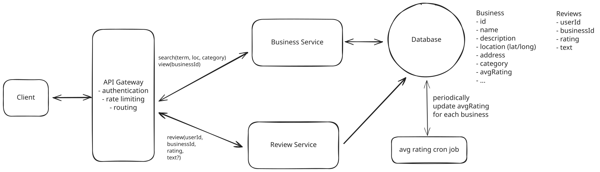
Periodic Update with Cron Job
Challenges
The main downside with this approach is that it does not account for real-time changes in reviews. You can imagine a business with very few reviews and a currently low average rating. If you give the business a 5-star rating, your expectation would be that the average rating increases to reflect your vote. However, since we're recalculating the average rating periodically, this may not happen for hours or even days, leading to a stale average rating and confused users.
Approach
Our goal with the great solution is to make sure we can update the average rating as we receive new reviews rather than periodically via a cron job. Doing this is relatively straight forward in that we simply need to both add the new review to the Review table while also updating the average rating for the business in the Business table.
To make that update efficient, we can introduce a new column, num_reviews, into the Business table. Now, to update an average rating, we simple calculate (old_rating * num_reviews + new_rating) / (num_reviews + 1), which is cheap, just a few CPU cycles so it can be done synchronously for each new review.
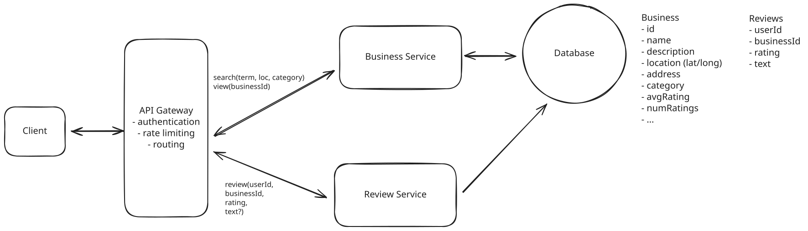
Synchronous Update with Optimistic Locking
Challenges
In doing this, we've actually introduced a new problem. What happens if multiple reviews come in at the same time for the same business? One could overwrite the other, leading to an inconsistent state!
Let's imagine a timeline of events:
- Business A has 100 reviews with an average rating of 4.0
- User 1 reads the current state: num_reviews = 100, avg_rating = 4.0
- User 2 also reads the current state: num_reviews = 100, avg_rating = 4.0
- User 1 submits a 5-star review and calculates: new_avg = (4.0 * 100 + 5) / 101 ≈ 4.01
- User 2 submits a 3-star review and calculates: new_avg = (4.0 * 100 + 3) / 101 ≈ 3.99
- User 1's update completes: num_reviews = 101, avg_rating = 4.01
- User 2's update overwrites: num_reviews = 101, avg_rating = 3.99
The final state (num_reviews = 101, avg_rating = 3.99) is incorrect because it doesn't account for User 1's 5-star review. The correct average should be:
(4.0 * 100 + 5 + 3) / 102 ≈ 4.00
To solve this issue, we can use optimistic locking. Optimistic locking is a technique where we first read the current state of the business and then attempt to update it. If the state has changed since we read it, our update fails. We'll often add a version number to the table you want to lock on, but in our case, we can just check if the number of reviews has changed.
Now, when user 2 would have overwritten user 1's review, our update will fail because the number of reviews has changed. User 2 will have to read the state again and recalculate the average rating. This solves the problem of concurrent updates and ensures the average rating is always up to date and consistent.
What about a message queue? Whenever I ask this question, particularly of senior candidates, most will propose we write incoming reviews to a message queue and then have a consumer update the average rating in a separate service. While this is a decent answer, it's important to note that this introduces additional complexity that, it can be argued, is not necessary given the write volume.
As we pointed out early, many people search/review businesses but very few actually leave reviews. We can estimate this read:write ratio at as much as 1000:1. With 100M users, that would mean only 100k writes per day, or 1 write per second. This is tiny. Modern databases can handle thousands of writes per second, so even accounting for surges, this will almost never be a problem.
Calling this out is the hallmark of a staff candidate and is a perfect example of where simplicity actually demonstrates seniority.
2) How would you modify your system to ensure that a user can only leave one review per business?
We need to implement a constraint that allows users to leave only one review per business. This constraint serves as a basic measure to prevent spam and abuse. For example, it stops competitors from repeatedly leaving negative reviews (such as 1-star ratings) on their rivals' businesses.
Here are some options.
Approach
The most basic option is to simply check if the user has already reviewed the business in the application layer, only writing the database if they haven't and returning an error otherwise. This is typically the solution I see mid-level (and often senior) candidates propose first.
Some simple pseudo code:
def leave_review(user_id, business_id):
reviews_for_business = db.get_reviews_for_business(business_id)
if user_id in reviews_for_business:
return "User has already reviewed this business"
else:
db.leave_review(user_id, business_id)Challenges
The main issue with the approach is that it's not robust to changes. The reality is that as the company grows there may be other services that also write reviews, Data Engineers running backfills, etc. In any of these cases, these new actors are likely to not be aware of your application-layer constraint and may violate it.
Less importantly, we've also introduced a potential race condition. If the same user submits two reviews at the same time, it's possible that both pass the check and you end up with two reviews, violating our constraint.
Approach
The right way to handle this is via a database constraint, effectively enforcing the constraint at the database engine level. This can be done via a unique constraint on the user_id and business_id fields.
ALTER TABLE reviews
ADD CONSTRAINT unique_user_business UNIQUE (user_id, business_id);Now, it's impossible to violate our constraint because the database will throw an error if we try to insert a duplicate. We just need to handle that error gracefully and send it back to the client. In the case of the race condition we mentioned earlier, there will always be one winner (as long as the data is on the same database instance, which it should be). The write attempt that ends up being processed second will throw a unique constraint error.
Generally speaking, whenever we have a data constraint we want to enforce that constraint as close the persistence layer as possible. This way we can ensure our business logic is always consistent and avoid having to do extra work in the application layer.
3) How can you improve search to handle complex queries more efficiently?
This is the crux of the interview and where you'll want to be sure to spend the most time. Search is a fairly complex problem and different interviewers may introduce different constraints or nuances that change the design. I'll walk through a couple of them.
The challenge is that searching by latitude and longitude in a traditional database without a proper indexing is highly inefficient for large datasets. When using simple inequality comparisons (> lat and < lat, > long and < long) to find businesses within a bounding box, the database has to perform a full table scan, checking every single record against these conditions. This is also true when searching for terms in the business name or description. This would require a wild card search across the entire database via a LIKE clause.
// This query sucks. Very very slow.
SELECT *
FROM businesses
WHERE latitude > 10 AND latitude < 20
AND longitude > 10 AND longitude < 20
AND name LIKE '%coffee%';Approach
The first thing we could do to improve the performance of this query is to add a simple B-tree index on the latitude and longitude columns. Ideally, this would make it faster to find businesses within a bounding box.
CREATE INDEX idx_latitude_longitude ON businesses (latitude, longitude);Challenges
The reality is this approach doesn't work as effectively as we might hope. The simple B-tree index we'd typically use for single-column or composite indexes is not well-optimized for querying 2-dimensional data like latitude and longitude. Here's why:
-
Range queries: When searching for businesses within a geographic area, we're essentially performing a range query on both latitude and longitude. B-tree indexes are efficient for single-dimension range queries but struggle with multi-dimensional ranges.
-
Lack of spatial awareness: B-tree indexes don't understand the spatial relationship between points. They treat latitude and longitude as independent values, which doesn't capture the 2D nature of geographic coordinates.
To truly optimize geographic searches, we need more specialized indexing structures designed for spatial data, such as R-trees, quadtrees, or geohash-based indexes. These structures are specifically built to handle the complexities of 2D (or even 3D) spatial data and can significantly improve the performance of geographic queries.
Approach
Instead, there are 3 different types of indexing strategies we'll need in order to search of 3, very different types of filters:
- Location: To efficiently search by location we need to use a geospatial index like geohashes, quadtrees, or R-trees.
- Name: To efficiently search by name we need to use a full text search index which uses a technique called inverted indexes to quickly search for terms in a document.
- Category: To efficiently search by category we can use a simple B-tree index.
There are several technologies which support all three of these indexing strategies (and more). One common example is Elasticsearch.
Elasticsearch is a search optimized database that is purpose built for fast search queries. It's optimized for handling large datasets and can handle complex queries that traditional databases struggle with making it a perfect fit for our use case.
Elasticsearch supports various geospatial indexing strategies including geohashing, quadtrees, and R-trees, allowing for efficient location-based searches. It also excels at full-text search and category filtering, making it ideal for our multi-faceted search requirements.
We can issue a single search query to Elasticsearch that combines all of our filters and returns a ranked list of businesses.
{
"query": {
"bool": {
"must": [
{
"match": {
"name": "coffee"
}
},
{
"geo_distance": {
"distance": "10km",
"location": {
"lat": 40.7128,
"lon": -74.0060
}
}
},
{
"term": {
"category": "coffee shop"
}
}
]
}
}
}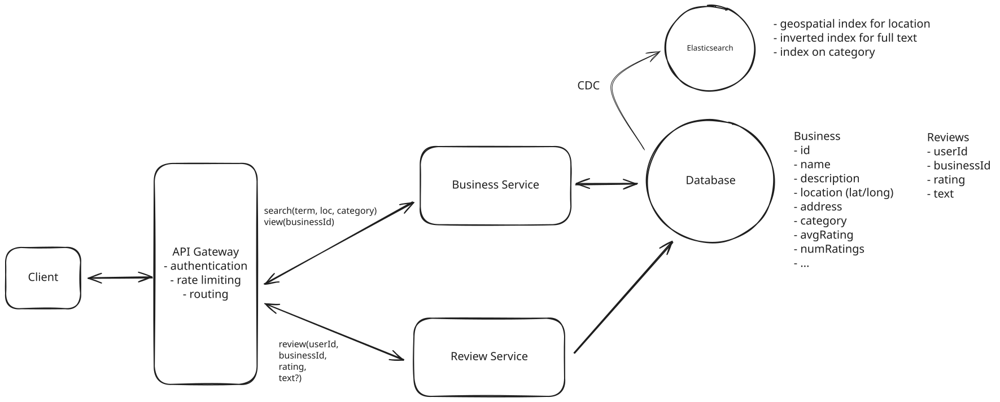
Elasticsearch
Challenges
The main challenge you want to be aware of when introducing Elasticsearch is that you won’t want to use it as a primary database, this is a no-no. It is not optimized to maintain transactional data integrity with full ACID compliance, nor to handle complex transactions. Additionally, Elasticsearch’s fault tolerance mechanisms, while effective, require careful configuration to avoid potential data loss during node or network failures. It’s best utilized for what it’s designed for: search and analytical operations across large datasets, rather than primary data storage.
As a result, we need a way to ensure the data in Elasticsearch remains in sync (consistent) with our primary database. The best way to do this is to use a Change Data Capture (CDC) system to capture changes to the primary database and then apply them to Elasticsearch.
This works by having all DB changes captured as events and written to a queue or stream. We then have a consumer process that reads from the queue or stream and applies the same changes to Elasticsearch.
Approach
One way we can get around the consistency issue all together is to just use Postgres with the appropriate extensions enabled.
Postgres has a geospatial extension called PostGIS that can be used to index and query geographic data.
CREATE EXTENSION IF NOT EXISTS postgis;Postgres also has a full text search extension called pg_trgm that can be used to index and query text data.
CREATE EXTENSION IF NOT EXISTS pg_trgm;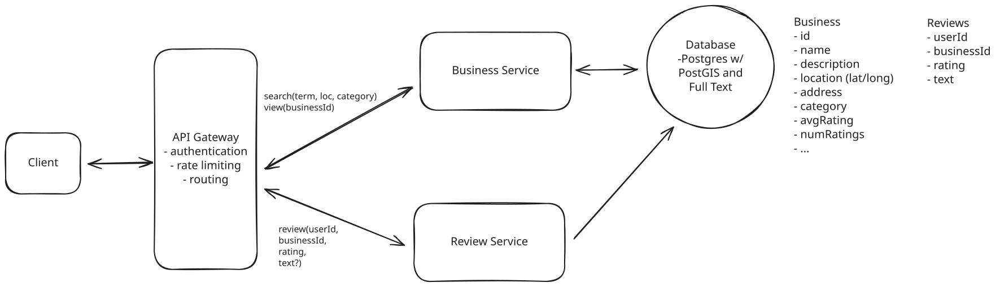
Postgres with Extensions
By using these extensions, we can create a geospatial index on the latitude and longitude columns and a full text search index on the business name and description columns without needing to introduce a new service.
Given that this is a small amount of data, 10M businesses x 1kb each = 10GB + 10M businesses x 100 reviews each x 1kb = 1TB, we don't need to worry too much about scaling, something that Elasticsearch excels at, so this is a perfectly reasonable solution.
However, it's worth noting that while PostGIS is excellent for geospatial queries, it may not perform as well as Elasticsearch for full-text search at very large scales.
In some cases, interviewers will ask that you don't use Elasticsearch as it simplifies the design too much. If this is the case, they're often looking for a few things in particular:
- They want you to determine and be able to talk about the correct geospatial indexing strategy. Essentially, this usually involves weighing the tradeoffs between geohashing and quadtrees, though more complex indexes like R-trees could be mentioned as well if you have familiarity. In my opinion, between geohashing and quadtrees, I'd opt for quadtrees since our updates are incredibly infrequent and businesses are clustered into densely populated regions (like NYC).
- Next, you'll want to talk about second pass filtering. This is the process by which you'll take the results of your geospatial query and further filter them by exact distance. This is done by calculating the distance between the user's lat/long and the business lat/long and filtering out any that are outside of the desired radius. Technically speaking, this is done with something called the Haversine formula, which is like the Pythagorean theorem but optimized for calculating distances on a sphere.
- Lastly, interviewer will often be looking for you to articulate the sequencing of the phases. The goal here is to reduce the size of the search space as quickly as possible. Distance will typically be the most restrictive filter, so we want to apply that first. Once we have our smaller set of businesses, we can apply the other filters (name, category, etc) to that smaller set to finalize the results.
4) How would you modify your system to allow searching by predefined location names such as cities or neighborhoods?
For staff level candidates or senior candidates that moved quickly and accurately through the interview up until this point, I'll typically ask this follow up question to increase the complexity.
Our design currently supports searching based on a business's latitude and longitude. However, users often search using more natural language terms like city names or neighborhood names. For example, Pizza in NYC.
Notably, these location are not just zipcodes, states, or cities. They can also be more complex, like a neighborhood ie. The Mission in San Francisco.
The first realization should be that a simple radius from a center point is insufficient for this use case. This is because city or neighborhoods are not perfectly circular and can have wildly different shapes. Instead, we need a way to define a polygon for each location and then check if any of the businesses are within that polygon.
These polygons are just a list of points and come from a variety of sources. For example, GeoJSON is a popular format for storing geographic data and includes functionality for working with polygons. They can also just be a list of coordinates that you can represent as a series of lat/long points.
We simply need a way to:
- Go from a location name to a polygon.
- Use that polygon to filter a set of businesses that exist within it.
Solving #1 is relatively straightforward. We can create a new table in our database that maps location names to polygons. These polygons can be sourced from various publicly available datasets (Geoapify is one example).
Then, to implement this:
- Create a locations table with columns for name (e.g., "San Francisco"), type (e.g., "city", "neighborhood"), and polygon (to store the geographic data).
- Populate this table with data from the chosen sources.
- Index the name column for efficient lookups.
This approach allows us to quickly translate a location name into its corresponding polygon for use in geographic queries.
Now what about #2, once we have a polygon how do we use it to filter businesses?
Conveniently, both Postgres via the PostGIS extension and Elasticsearch have functionality for working with polygons which they call Geoshapes or Geopoints respectively.
In the case of Elasticsearch, we can simply add a new geo_shape field to our business documents and use the geo_shape query to find businesses that exist within a polygon.
{
"query": {
"geo_bounding_box": {
"location": {
"top_left": {
"lat": 42,
"lon": -72
},
"bottom_right": {
"lat": 40,
"lon": -74
}
}
}
}
}Doing this bounding box search on every request isn't that efficient though. We can do better.
Instead of filtering on bounding boxes for each request, we can pre-compute the areas for each business upon creation and store them as a list of location identifiers in our business table. These identifiers could be strings (like "san_francisco") or enums representing different areas.
For example, a business document in Elasticsearch might look like this:
{
"id": "123",
"name": "Pizza Place",
"location_names": ["bay_area","san_francisco", "mission_district"],
"category": "restaurant"
}Now all we need is an inverted index on the location_names field via a "keyword" field in ElasticSearch
By pre-computing the encompassing areas we avoid doing them on every request and only need to do them once when the business is created.
Final Design
After applying all the deep dives, we may end up with a final design that looks like this:
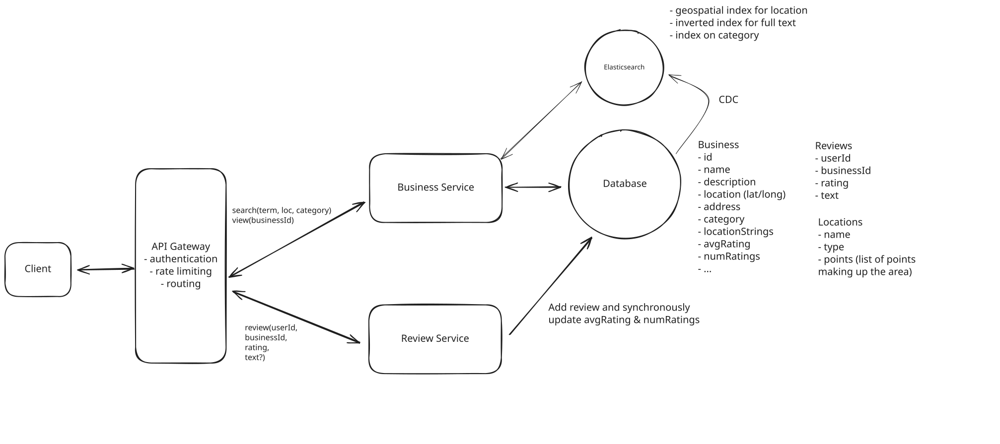
Yelp Final Design
What is Expected at Each Level?
So, what am I looking for at each level?
Mid-level
At mid-level, I'm mostly looking for a candidate's ability to create a working, high-level design while being able to reasonably answer my follow-up questions about average ratings and search optimizations. I don't expect them to know about database constraints necessarily, but I do want to see them problem solve and brainstorm ways to get the constraint closer to the persistence layer. I also don't expect in-depth knowledge of different types of indexing, but they should be able to apply the "correct" technologies to solve the problem.
Senior
For senior candidates, I expect that you nail the majority of the deep dives with the exception of "search by name string." I'm keeping an eye on your tendency to over-engineer and want to see strong justifications for your choices. You should understand the different types of indexes needed and should be able to weigh tradeoffs to choose the most effective technology.
Staff+
For staff candidates, I'm really evaluating your ability to recognize key insights and use them to derive simple solutions. Things like using Postgres extensions to avoid introducing a new technology (like Elasticsearch) and avoid the consistency issues, recognizing that the write throughput is tiny and thus we don't need a message queue. Identifying that the amount of data is also really small, so a simple read replica and/or cache is enough, no need to worry about sharding. Staff candidates are able to acknowledge what a complex solution could be and under what conditions it may be necessary, but articulate why, in this situation, the simple option suffices.
Test Your Knowledge
Answer the question below to find your gaps.
Question 1 of 15
Which data structure enables efficient full-text search?
1
Inverted index
2
Hash table
3
B-tree index
4
Binary heap